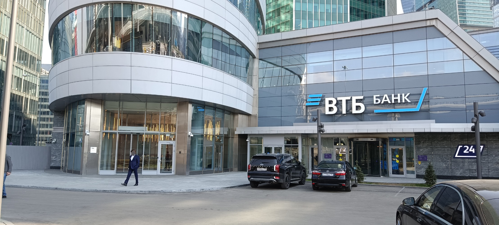
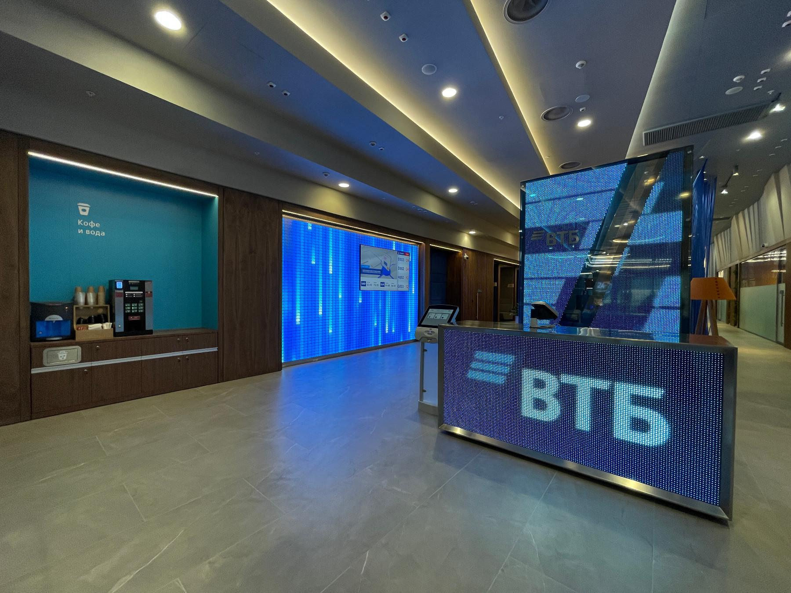
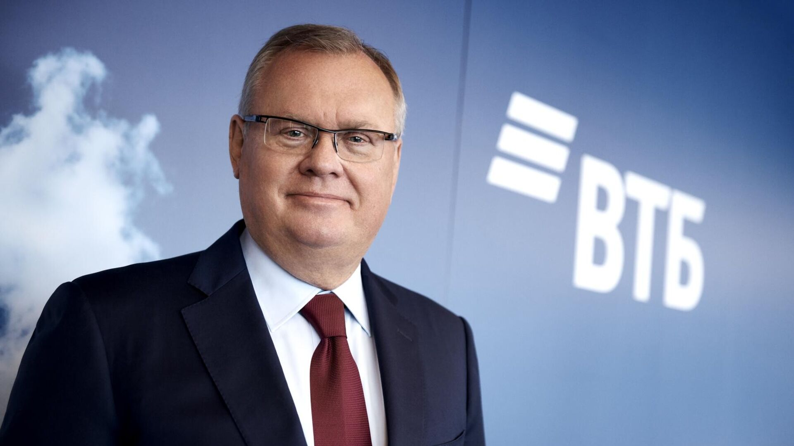

Банк ВТБ (ПАО)
Основан в 1990 году
Ключевые факты
ВТБ — один из крупнейших банков России. Полное наименование: Банк ВТБ (публичное акционерное общество).
Год основания: 1990 (как Внешторгбанк).
Основатель: Центральный банк РФ.
Главный офис: г. Санкт-Петербург, ул. Большая Морская, 29.
Ключевые показатели (2025):
Активы: более 21 трлн руб.
Клиенты: более 19 млн физических лиц и 1,2 млн юридических лиц.
Региональная сеть: более 1 300 отделений по всей России.
Банк входит в топ-3 банков России по размеру активов и капитала. Лицензия ЦБ РФ № 1000.

История развития
В 1990-е годы банк занимался в основном обслуживанием внешней торговли и международных расчётов. В 2000-е начал активно развивать розничный бизнес: кредиты, вклады, ипотека.
Ключевые вехи:
- 2005 год — покупка Гута-банка, выход на московский рынок
- 2006 год — IPO на Лондонской фондовой бирже
- 2010 год — запуск программы «ВТБ — детям»
- 2020 год — лидер по ипотечному кредитованию в России
- 2024 год — запуск собственного AI-помощника в мобильном приложении
Сегодня ВТБ работает в более чем 20 странах мира.

Направления деятельности
ВТБ предоставляет полный спектр финансовых услуг:
- Кредитование — ипотека, потребительские кредиты, автокредиты, кредитные карты
- Инвестиции — брокерское обслуживание, ИИС, доверительное управление
- Страхование — жизнь, здоровье, недвижимость, авто
- Цифровые сервисы — мобильный банк, онлайн-оплата, автоплатежи
- Бизнесу — расчётно-кассовое обслуживание, эквайринг, зарплатные проекты
«ВТБ Онлайн» — одно из самых скачиваемых банковских приложений в России.
Руководство и контакты

Президент — председатель правления: Андрей Костин (с 2002 года).
Официальный сайт: www.vtb.ru
Горячая линия: 8-800-100-24-24
Для юридических лиц: 8-800-100-56-56
E-mail: help@vtb.ru
Адрес главного офиса: г. Санкт-Петербург, ул. Большая Морская, д. 29.
Время работы: пн–пт с 9:00 до 18:00.
Социальная ответственность
Банк ВТБ активно участвует в благотворительных проектах и поддерживает образование, культуру и спорт.
С 2010 года работает программа «ВТБ — детям», в рамках которой построено более 50 детских площадок и спортивных комплексов по всей России.
ВТБ является генеральным спонсором Фестиваля классической музыки «Классика на Дворцовой» и поддерживает Эрмитаж, Большой театр, Мариинский театр.
Волонтёрское движение ВТБ насчитывает более 5 000 сотрудников.